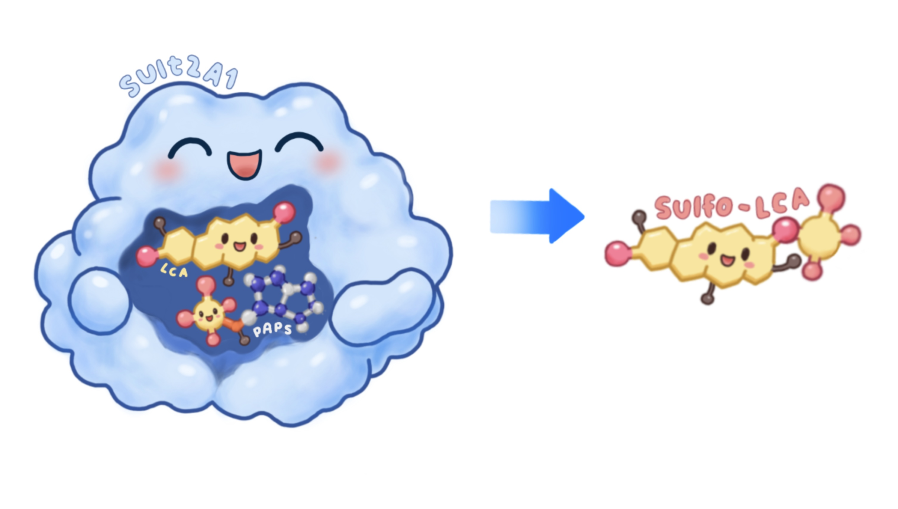
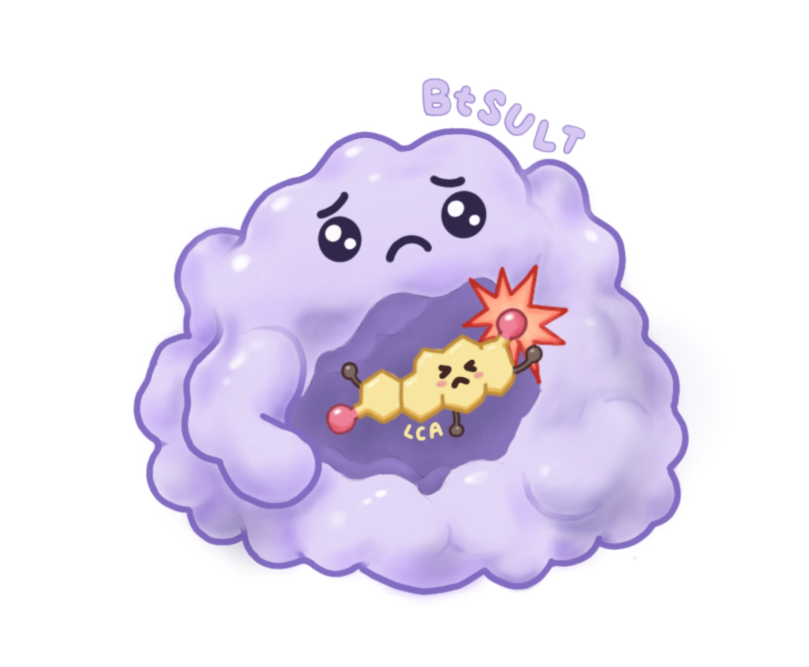

Over 60 million patients across the entire world experience post-cholecystectomy syndrome, commonly abbreviated PCS. This is the umbrella term for symptoms associated with gallbladder removal.
SulFlux / Explore
Explore.
Select a planet to explore.
Planet 01
The gallbladder
Over 60 million patients across the entire world experience post-cholecystectomy syndrome, commonly abbreviated PCS. This is the umbrella term for symptoms associated with gallbladder removal.
The gallbladder, located right beneath the liver, stores and regulates bile. Some common reasons for gallbladder removal include the presence of gallstones, inflammation, and cancer risk. When this organ is removed, bile acids, which originally played a large role in digestion, become de-regulated, leading to side effects such as diarrhea, vomiting, and increased risk of colon cancer.
Next: SULT2A1
Planet 02
SULT2A1
In a healthy human body, the liver serves as the detoxifier for metabolites that go through the digestive system. Within the liver, SULT2A1, a key mammal protein that sulfonates bile acids, is produced. Sulfonation is the process of a sulfate group to the bile acid structure. By sulfonating bile acids, it leads to reduced cytotoxicity and increased water solubility, lessening damage to surrounding cells.
Next: LCA & DCAPlanet 03
LCA & DCA
In post-cholecystectomy syndrome, secondary bile acids are overproduced in patients. Two of the most common secondary bile acids are lithocholic acid (LCA) and deoxycholic acid (DCA). When left un-sulfonated, these two secondary bile acids are toxic in large quantities. Although sulfonation detoxifies these secondary bile acids, the baseline activity already present in humans is not enough for the unregulated bile acid flow as a result of gallbladder removal.
Next: BtSULT
BtSULT / SulFlux
BtSULT
As such, Renata has turned to BtSULT, a bacterial homolog of the SULT2A1 enzyme that was found in Bacteroides thetaiotaomicron. Since bacteria are able to produce the enzyme in higher quantities than humans naturally can, we believe that we can harness this enzyme in order to ease PCS patients’ symptoms and risks associated with the disease. However, one issue remains standing: BtSULT is not naturally able to bind to lithocholic acid due to severe differences in active site geometry.
SulFlux
To alleviate this obstacle, we have turned to re-engineering the BtSULT enzyme. Through protein engineering, we have created a new version of BtSULT, titled SulFlux, which is able to bind to and sulfonate lithocholic acid.
ContinueSulFlux
Escherichia coli
Utilizing Escherichia coli as an expression chassis for SulFlux production, which is then consumed in the form of a probiotic, allows for direct delivery of bacterial sulfonation enzymes to assist in secondary bile acid detoxification.
Explore the projectULP-CA / SulFlux